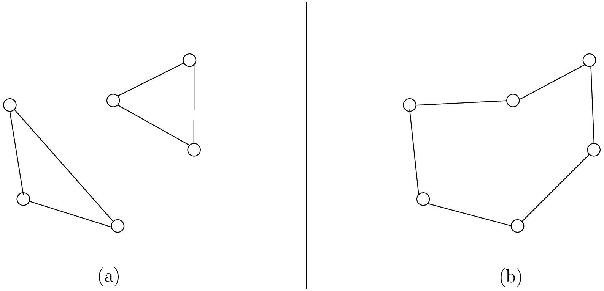
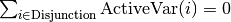
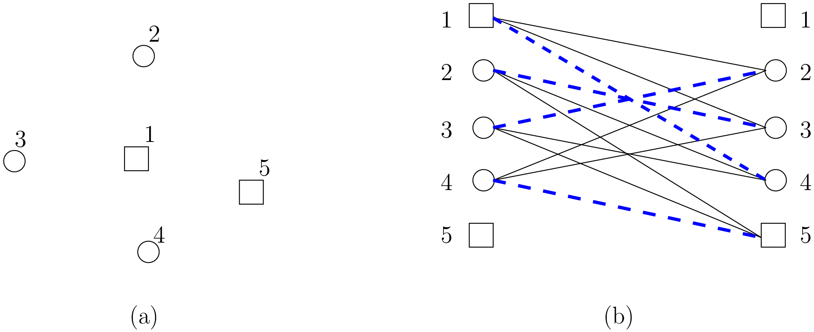
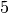
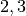
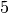
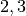

In this section, we give an overview of the main basic components of our model. Most of these
components will be detailed in this chapter and the next two chapters.
In the section The Routing Library (RL) of the chapter Under the hood,
we describe the inner mechanisms of the RL in details.
9.5.1. The RoutingModel class
All ingredients are defined within the RoutingModel class. This class is declared in the header
constraint_solver/routing.h.
As already mentionned, the RL is a layer above the CP Solver and the internal cabling is accessible through
the underlying solver:
RoutingModel routing(...);
Solver* const solver = routing.solver();
Most desirable features for an RL are directly accessible through the RoutingModel class though.
The accessors (getters and setters)
will be discussed throughout the third part of this manual. But it is good
to know that, as a last resort, you have a complete access (read control) to the internals of the RL.
Basically, two constructors are available depending on the number of depots:
if there is only one depot:
// 42 nodes and 7 routes/vehicles
RoutingModel routing(42, 7);
// depot is node with NodeIndex 5
routing.SetDepot(5);
if there are several start/end depots:
// create multi depots
std::vector<std::pair<RoutingModel::NodeIndex,
RoutingModel::NodeIndex> > depots(2);
depots[0] = std::make_pair(1,5);
depots[1] = std::make_pair(7,1);
RoutingModel VRP(9, 2, depots);
Note that the space between the two ending “>” in:
std::vector<std::pair<RoutingModel::NodeIndex,
RoutingModel::NodeIndex> > depots(2);
is mandatory.
9.5.2. Variables
Basically, there are two type of variables:
- Path variables: the main decision variables and additional variables to describe the different routes and
- Dimension variables: these variables allow to add side constraints like time-windows, capacities, etc.
and denote some quantities (the dimensions) along the routes.
From now on in this section, we only use the internal int64 indices except if the indices are explicitly
of type NodeIndex. This is worth a warning:
Warning
For the rest of this section, we only use the internal int64 indices except if the indices are explicitly
of type RoutingModel::NodeIndex.
9.5.2.1. Path variables
Path variables describe the different routes. There are three types of path variables that can be accessed with
the following methods:
- NextVar(i): the main decision variables. NextVar(i) == j is true if j is the node
immediately reached from node i in the solution.
- VehicleVar(i): represents the vehicle/route index to which node i belongs in the solution.
- ActiveVar(i): a Boolean variable that indicates if a node i is visited or not in the solution.
9.5.2.1.1. Main decision variables
You can access the main variables with the method NextVar(int64):
IntVar* var = routing.NextVar(42);
var is a pointer to the IntVar corresponding to the node with the int64 42 index.
In a solution solution, the value of this variable gives the int64 index of the next node visited after this node:
Assignment * const solution = routing.Solve();
...
int64 next_node = solution.Value(var);
9.5.2.1.2. Vehicles
Different routes/vehicles service different nodes. For each node i, VehicleVar(i) represents the IntVar* that
represents the int index of the route/vehicle servicing node i in the solution:
int route_number = solution->Value(routing.VehicleVar(i));
Taking a shortcut in the notation, we have that:
if NextVar(i) == j then VehicleVar(j) == VehicleVar(i).
That is, both nodes i and j are serviced by the same vehicle.
To grab the first and last node (starting and ending depot) of a route/vehicle route_number,
you can use the Start() and End() methods that we discussed previously:
int64 starting_depot = routing.Start(route_number);
int64 ending_depot = routing.End(route_number);
9.5.2.1.3. Disjunctions and optional nodes
A node doesn’t have to be visited. Nodes can be optional or part of a Disjunction, i.e. part of a subset
of nodes out of which at most one node can be visited in a solution.
ActiveVar(i) returns a boolean IntVar* (a IntVar variable with a {0, 1} domain) indicating if the node i
is visited or not in the solution. The way to describe a node that is not visited is to make its NextVar(i) points
to itself. Thus, and again with an abuse of notation, we have:
ActiveVar(i) == (NextVar(i) != i).
We’ll discuss Disjunctions and optional nodes in details in the
section disjunctions when we will transform
a Cumulative Chinese Postman Problem (CCPP) into a Generalized TSP (GTSP). A GTSP is similar to a TSP except that you have
clusters of nodes you want to visit, i.e. you only want to visit 1 node in each cluster.
9.5.2.2. Dimension variables
Dimension variables are used to accumulate quantities (or dimensions) along the routes.
To denote a dimension, we use an std::string d. There are three types
of dimension variables:
CumulVar(i, d): variables representing the quantity of dimension d when
arriving at the node i.
TransitVar(i, d): variables representing the quantity of dimension d added
after visiting the node i.
SlackVar(i, d): non negative slack variables such that (with the same abuse of notation as above):
if NextVar(i) == j then CumulVar(j) = CumulVar(i) + TransitVar(i) + SlackVar(i).
For a time dimension, you can think of waiting times.
You can add as many dimensions as you want.
The transit values can be constant, defined with callbacks, vectors or matrices.
You can represent any quantities along routes with dimensions but not only. For instance, capacities and
time windows can be modelled with dimensions.
We’ll play with dimensions at the end of this chapter when we’ll try to solve
The Travelling Salesman Problem with Time Windows in or-tools.
9.5.3. Constraints
In addition to the basics constraints that we discussed in the previous sub-section, the RL uses constraints to avoid cycles,
constraints to model the Disjunctions and pick-up and delivery constraints.
9.5.3.1. No cycle constraint
One of the most difficult constraint to model is a constraint to
avoid cycles in the solutions. For one tour, we don’t want to revisit some nodes.
Often, we get partial solutions like the one depicted on figure (a):

It is often easy to obtain optimal solutions when we allow cycles (like in figure (a)) but difficult to obtain
a real solution (like in figure (b)), i.e. without cycles. Several constraints have been proposed in the scientific literature,
each with its cons and pros. Sometimes, we can avoid this constraint by modelling the problem in such a way that only
solutions without cycles can be produced but then we have to deal with huge and often numerically
(and theoretically) unstable models.
In the RL, we use our dedicated NoCycle constraint (defined in constraint_solver/constraints.cc) in
combination with an AllDifferent constraint on the NextVar() variables. The NoCycle constraint is implicitly
added to the model.
The NoCycle constructor has the following signature:
NoCycle(Solver* const s,
const IntVar* const* nexts,
int size,
const IntVar* const* active,
ResultCallback1<bool, int64>* sink_handler,
bool owner,
bool assume_paths);
We will not spend too much time on the different arguments. The nexts and active arrays
are what their names imply. The sink_handler is just a callback that indicates if a node is a sink or not.
Sinks represent the depots, i.e. the nodes where paths start and end.
The bool owner allows the solver to take ownership of the callback or not and the bool
assume_paths indicates if we deal with real paths or with a forest (paths don’t necessarily end)
in the auxiliary graph.
The constraint essentially performs two actions:
- forbid partial paths from looping back to themselves and
- ensure each variable/node can be connected to a sink.
We refer the reader to the subsection
NoCycle constraint for
a detailed description of our internal NoCycle constraint.
9.5.3.2. Disjunction constraints
Disjunctions on a group of nodes allow to visit at most one of the nodes in this group. If you want to visit
exactly one node in a Disjunction, use:
void AddDisjunction(const std::vector<NodeIndex>& nodes);
where nodes represents the group of nodes. This constraint is equivalent to:
You might want to use optional Disjunctions, i.e. a group of nodes
out of which at most one node
can be visited.
This time, use:
void AddDisjunction(const std::vector<NodeIndex>& nodes,
int64 penalty);
This constraint is equivalent to:
where p is a boolean variable corresponding to the Disjunction and the objective function has an added (p * penalty) term.
If none of the variables in the Disjunction is visited
(), p must be equal to one and the penalty
is added to the objective function.
To be optional, the penalty penalty attributed to the Disjunction
must be non-negative (), otherwise the RL uses a simple Disjunction, i.e. exactly one
node in the Disjunction will be visited in the solutions.
9.5.3.3. Pick-up and delivery constraints
These constraints ensure that two nodes belong
to the same route.
For instance, if nodes i and j must be visited/delivered by the same vehicle, use:
void AddPickupAndDelivery(NodeIndex i, NodeIndex j);
Whenever you have an equality constraint linking
the vehicle variables of two nodes, i.e. you want to force the two nodes to be visited by the same vehicle,
you should add (because it speeds up the search process!) the PickupAndDelivery constraint:
Solver* const solver = routing.solver();
solver->AddConstraint(solver->MakeEquality(
routing.VehicleVar(routing.NodeToIndex(i)),
routing.VehicleVar(routing.NodeToIndex(j))));
routing.AddPickupAndDelivery(i, j);
This constraint is counter-intuitive in a least two ways:
- It is not modelled by a real constraint: this pair of nodes is used
to filter out solutions. PathOperators take them into account in the
Local Search and
- It doesn’t specify an order on the “ordered” pair (i,j) of nodes: node j could be visited before node i.
Warning
The implementation of the PickupAndDelivery constraint in the RL is a little counter-intuitive.
9.5.3.4. The CloseModel() method
Because we don’t completely define the model when we construct the RoutingModel class, most
of the (implicit or explicit) constraints and
the objective function are added in a special CloseModel() method.
This method is automatically called before a call to Solve() but if you want to inspect the model before, you need to
call this method explicitly. This method is also automatically called when you deal with Assignments. In particular,
it is called by
- ReadAssignment();
- RestoreAssignment() and
- ReadAssignmentFromRoutes().
9.5.4. The objective function
The objective function is defined by an IntVar. To get access to it, call CostVar():
IntVar* const obj = routing.CostVar();
The RL solver tries to minimize this obj variable. The value of the objective function is the sum of:
- the costs of the arcs in each path;
- a fixed cost of each route/vehicle;
- the penalty costs for not visiting optional Disjunctions.
We detail each of these costs.
9.5.4.1. The costs of the arcs
To set the cost of each arc, use a NodeEvaluator2 callback to return the cost of each (i,j) arc:
void SetCost(NodeEvaluator2* evaluator);
NodeEvaluator2 is simply a typedef for a
ResultCallback2<int64, NodeIndex, NodeIndex>, i.e. a class that defines
an int64 Run(NodeIndex i, NodeIndex j) or method. If you already have a class that defines a distance method on
pairs of NodeIndexes, you can transform this class into a NodeEvaluator2 with NewPermanentCallback().
First, the class that computes the distances:
class ComputeDistances {
...
int64 Distance(RoutingModel::NodeIndex from,
RoutingModel::NodeIndex to) const {
return ...;
}
...
;
Then, the use of a NodeEvaluator2 callback with NewPermanentCallback():
RoutingModel routing(....);
ComputeDistances my_distances_class(...);
routing.SetCost(NewPermanentCallback(&my_distances_class,
&ComputeDistances::Distance));
You can also use a function:
int64 distance(RoutingModel::NodeIndex i,
RoutingModel::NodeIndex j) {
return ...;
}
and use again NewPermanentCallback():
routing.SetCost(NewPermanentCallback(&distance));
NewPermanentCallback() is a (set of) function(s) that returns the appropriate callback class made from its arguments.
Some template magic might be involved too. ResultCallback2 and NewPermanentCallback() are defined in the
header base/callback.h. If you are curious about the callback mechanism and the use of NewPermanentCallback(),
read the sub-section Callbacks.
9.5.4.2. A fixed cost for each of the existing routes
Routes/Vehicles don’t all have to be used. It might cost less not to use a route/vehicle. To add a fixed cost
for each route/vehicle, use:
void SetRouteFixedCost(int64 cost);
This int64 cost will only be added for each route that contains at least one visited node, i.e. a different node
than the start and end nodes of the route.
9.5.4.3. A penalty cost for missed Disjunctions
We have already seen the penalty costs for optional Disjunctions above. The penalty cost is only added to the
objective function for a missed Disjunction: the solution doesn’t visit any node of the Disjunction. If the given
penalty cost is negative for an optional Disjunction, this Disjunction becomes mandatory and the penalty is set to
zero. The penalty cost can be zero for optional Disjunction and you can model optional nodes by using
singletons for
each Disjunction.
9.5.4.4. Different types of vehicles
The cost for the arcs and the used routes/vehicles can be customized for each route/vehicle.
To customize the costs of the arcs, use:
void SetVehicleCost(int vehicle, NodeEvaluator2* evaluator);
where vehicle is the number of the route/vehicle.
To customize the fixed costs of the routes/vehicles, use:
void SetVehicleFixedCost(int vehicle, int64 cost);
9.5.4.5. Lower bounds
You can ask the RL to compute a lower bound on the objective function of your routing model by calling:
int64 RoutingModel::ComputeLowerBound();
This method does the following.
A bipartite graph is created with left nodes representing the nodes of the
routing problem and right nodes representing possible node successors. An
arc between a left node l and a right node r is created if r can be the
node following l in a route (NextVar(l) = r). The cost of the arc is the transit
cost between l and r in the routing problem. Solving a Linear Assignment Problem
(minimum-cost perfect bipartite matching) returns a lower bound. Did you get it? Let’s draw a figure.

On the left (figure (a)), we have an original graph with two depots: a starting depot  and an ending depot
 and three transit nodes  and . On the right (figure (b)), we have a bipartite
graph with the same number of left and right nodes. The cost on an arc (l,r) is
the real
transit cost from l to r. The Linear Assignment Problem consists in finding a perfect matching of minimum cost, i.e.
a bijection along the arcs between the two sets of nodes of the bipartite graph for a minimum cost. On figure (b), such
an optimal solution is depicted in thick blue dashed lines. As is the case here, this solution doesn’t
necessarily produce a (set of) closed route(s) from a starting depot to an
ending depot.
and an ending depot
 and three transit nodes  and . On the right (figure (b)), we have a bipartite
graph with the same number of left and right nodes. The cost on an arc (l,r) is
the real
transit cost from l to r. The Linear Assignment Problem consists in finding a perfect matching of minimum cost, i.e.
a bijection along the arcs between the two sets of nodes of the bipartite graph for a minimum cost. On figure (b), such
an optimal solution is depicted in thick blue dashed lines. As is the case here, this solution doesn’t
necessarily produce a (set of) closed route(s) from a starting depot to an
ending depot.
The routing model must be closed before calling this method.
Warning
Routing Problems with node disjunction constraints (including optional
nodes) and non-homogenous costs are not supported yet (the method returns 0 in
these cases).
If your model is linear, you also can use the linear relaxation of your model.
We will explore these and other lower bounds in the section lower_bounds when we’ll try to solve the Cumulative
Chinese Postman Problem.
9.5.5. Miscellaneous
We discuss here several improvements and conveniences of the RL.
9.5.5.1. Cache
[TO BE WRITTEN]
9.5.5.2. Light constraints
To speed up the search, it is sometimes better to only propagate on the bounds instead of
the whole domains for the basic constraints. These “light” constraints are “checking” constraints,
only triggered on WhenBound() events. They provide very little (or no) domain filtering.
Basically, these constraints ensure that the variables are respecting the equalities of the basic
constraints. They only perform bound reduction on the variables when these variables are bound.
You can trigger the use of these light constraints with the following flag:
DEFINE_bool(routing_use_light_propagation, false,
"Use constraints with light propagation in routing model.");
When false, the RL uses the regular constraints seen in the previous parts of this manual.
Try it, sometimes
you can get a serious speed up. These light constraints are especially useful in Local Search.
9.5.5.3. Locks
Often during the search, you find what appears to be good sub-solutions, i.e.
partial routes that seem promising and that you want to keep fixed for a while during the search. This can
easily be achieved by using locks.
A lock is simply an std::vector<int64> that represents a partial route. Using this lock ensures that
NextVar(lock[i]) == lock[i+1]
is true in the current solution.
We will use locks in the section partial_routes when we will try to solve the Cumulative Chinese Postman
Problem.